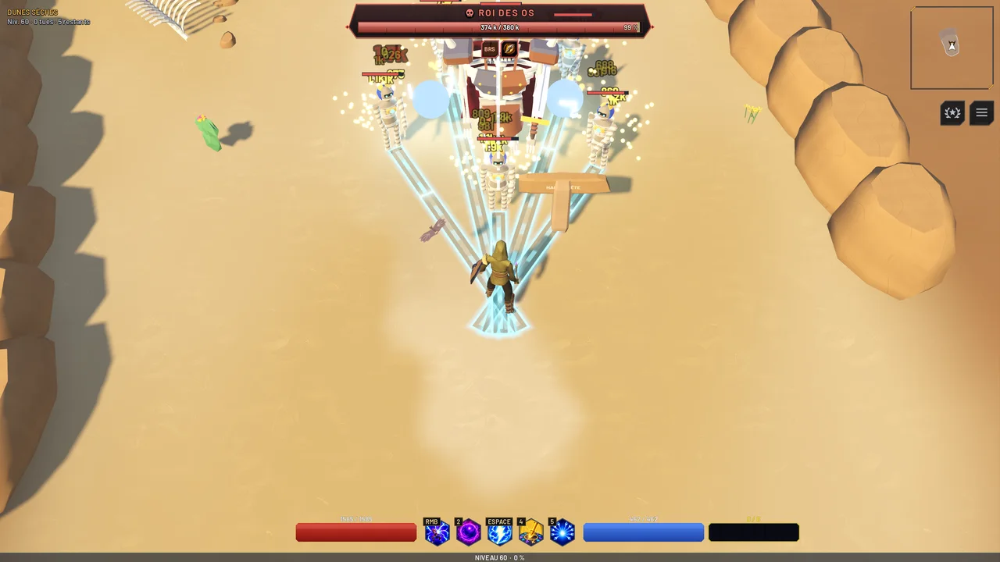
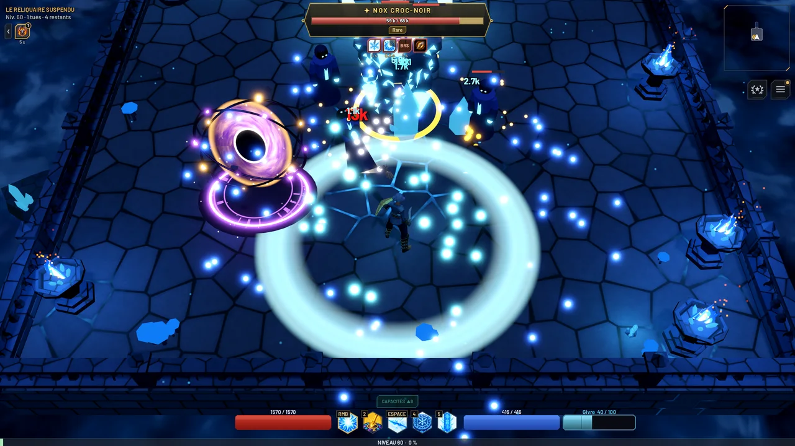

Bestiaires et profondeurs
Un bestiaire fait main pour chaque acte, des décors qui s'animent, trois actes en avant-première et un vrai tir à l'arc.
Chaque acte a désormais ses propres monstres, faits main, les décors s'animent et trois nouveaux actes sont ouverts en avant-première. Les archers tirent enfin comme des archers. Bon jeu !
Un bestiaire par acte
Aucun monstre n'est réutilisé d'un acte à l'autre : six monstres par acte, du tireur au kamikaze, et deux ou trois boss. Loups et chamans gobelins en forêt, momies et golems de grès au désert, élémentaires de lave dans la faille, et trois nouveaux pirates sur la côte.

Trois actes en avant-première
Ouverts dès le départ depuis la carte : la Flèche Cendrée, sanctuaire de mana suspendu au-dessus d'un gouffre, les Fonds Engloutis et leur récif, et le Castel Sanguin, ses salons et ses geôles.

Décors vivants et vrai tir à l'arc
Papillons, lucioles et feuilles qui tombent en forêt, virevoltants au désert, geysers dans la faille. L'arc se tient de profil, corde tirée jusqu'à la joue, et la flèche part au lâcher. On peut aussi courir en attaquant, et le support Incantation Mobile permet de bouger pendant un lancement.
Notes de version
Monstres
- Un bestiaire par acte, sans aucun monstre réutilisé d'un acte à l'autre : six monstres par acte (mêlée, tireur, lanceur, bondisseur, costaud, kamikaze) et deux ou trois boss, tous remodelés et animés.
- Forêt : loups, sangliers, gobelins, archers et chamans gobelins, araignées tisse-lune. Boss : Grumm, Roi des Trolls, la Reine Tisse-Lune et Zig-Zag, Grand Oracle Gobelin.
- Désert : chiens d'os, vautours, archers squelettes, momies, colosses d'os, golems de grès. Boss : le Roi des Os et le Nécromancien des sables.
- Faille : diablotins, scarabées de feu, molosses de cendre, cracheurs de magma, invocateurs de flammes, élémentaires de lave. Boss : Ignar, Salamandre ardente et Morgrath, Seigneur de la Faille.
- Côte : crabes, matelots requins, flibustiers et trois nouveaux pirates — le Canonnier, la Sorcière des marées et le Mousse à poudre (tonneau à mèche). Boss : Roi Pince-d'Écume, Mâchoire et Capitaine Barbe-Cendre.
- Les boss ont plus d'animations : frappe au sol, cri, sorts, saut, invocations.
- Tailles harmonisées : les monstres ne sont plus minuscules, les boss font environ deux fois votre taille. Les créatures volantes restent en l'air, et la barre de vie se place au-dessus de chaque monstre.
- Yeux, runes, lave et cristaux brillent vraiment.
Avant-première : actes V à VII
- La Flèche Cendrée : un sanctuaire de mana suspendu au-dessus d'un gouffre, six cartes. Feux de mana, golems de cristal, chevaliers spectraux ; boss : l'Archonte du Reliquaire et le Colosse de cristal.
- Les Fonds Engloutis : récif, épave, grottes, dunes et fosse, puits de lumière, bancs de poissons, tortues. Hommes-poissons, méduses, piranhas ; boss : le Kraken des profondeurs et la Reine des sirènes.
- Le Castel Sanguin : salons, appartements, geôles, nef et remparts. Chauves-souris vampires, gargouilles, chevaliers de sang ; boss : le Comte Sanguin et la Bête de la crypte.
Décors vivants
- Forêt : papillons, hirondelles, lucioles, feuilles qui tombent, champignons lumineux ; arbres et buissons dans le vent.
- Désert : parois de grès en strates, vautours, virevoltants, tourbillons de poussière, camps nomades.
- Faille : basalte veiné de lave qui pulse, braises et cendres, geysers.
- Côte et refuge : palmiers au vent, mouettes, papillons.
Combat
- Nouveau support Incantation Mobile : vous pouvez vous déplacer pendant un lancement, à vitesse réduite (le malus diminue avec le niveau).
- Courir en attaquant : les jambes courent pendant que le haut du corps attaque ou lance le sort, le bassin pivote vers la marche.
- Tir à l'arc refait : profil, bras tendu, corde tirée jusqu'à la joue, flèche encochée, lâcher. La flèche part au lâcher de la corde. Pluie de flèches tire en cloche. Entre deux tirs, la posture est gardée, puis l'archer se relâche en douceur. L'arc est tenu debout, dans le bon sens.
- 11 nouveaux supports : Crescendo, Division, Tir lointain, Déflagration, Réserve de charges, Économie, Siphon de mana, Totem de sort, Serviteurs instables, Garde des serviteurs, Pénétration élémentaire. Tous les supports affichent leurs tags et les compétences auxquelles ils s'appliquent ; nouvelles icônes.
Progression
- Début plus posé : l'expérience demandée est un peu plus élevée aux premiers niveaux. Talents dès le niveau 2, classe et passif au niveau 5, premier point d'ascension au niveau 8.
- Arbre des Terres ouvert au premier palier de cauchemar ; ses points viennent des cartes de cauchemar terminées pour la première fois. Les actes pas encore atteints sont verrouillés sur la carte.
Corrections
- Plus d'erreur quand un monstre qui explose à sa mort meurt juste avant la détonation.
- Trou noir sans couture, coffre du refuge ajusté, cadenas dessinés.